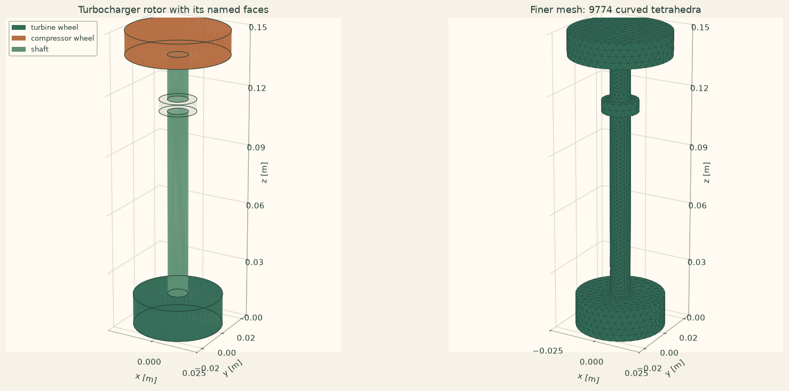

Docs › Examples › Free vibration modes of a turbocharger rotor
Structural dynamics · 3D
Free vibration modes of a turbocharger rotor
A simplified turbocharger rotor with turbine wheel, thrust collar and compressor wheel is analysed free-free, as on a soft suspension in a modal test.
Run locally with OneSimulation. The example downloads are free. Running them requires an activated runtime. Runtime Alpha 0.2.1a7 · CPython 3.13 on macOS (Apple Silicon), Ubuntu 22.04 (x86-64), and Windows x64. Installation and activation · View pilot plans. Scope of the reference checks.

What it computes
OneSimulation reads the rotor from a STEP file, meshes it with curved quadratic tetrahedra and solves the natural modes of the free 3D body on two meshes, keeping the six rigid-body modes apart; an independent stepped beam model of the same rotor, built from 3D beam elements and also free at both ends, classifies the modes into bending, torsion and axial. The script that builds the STEP file comes with the notebook.
What it checks
Both models find six rigid-body modes; the torsional mode (795 Hz) and the first bending pair (840 Hz) agree with the beam model within 2 %, higher bending pairs within 6-10 % where the wheels themselves deform, and the 3D frequencies change by at most 0.04 % between the meshes.
Geometry
The notebook starts at the import of the CAD file turbocharger_rotor_free_modes.step: STEP (AP242), readable by any CAD program, with the names of the faces that the boundary conditions use. Put it next to the notebook.

The geometry script
The script turbocharger_rotor_free_modes_geometry.py builds the geometry with the CAD objects of OneSimulation and writes the file. Change a dimension there, run it, and run the notebook again.
"""Geometry of the OneSimulation example "Free vibration modes of a turbocharger rotor".
Builds a simplified turbocharger rotor with the CAD objects of OneSimulation: a 10 mm shaft, 150 mm
long, with the turbine wheel (44 mm disk) at one end, the compressor wheel (50 mm disk) at the other
and a thrust collar between the bearing seats. The faces of the two wheels and of the shaft are named
and the part is written to turbocharger_rotor_free_modes.step.
"""
from onesim.cad.d3 import Cylinder, UnionFromObjects
shaft = Cylinder(radius=0.005, length=0.150)
turbine = Cylinder(radius=0.022, length=0.016)
collar = Cylinder(radius=0.009, length=0.006, origin=(0.0, 0.0, 0.110))
compressor = Cylinder(radius=0.025, length=0.012, origin=(0.0, 0.0, 0.138))
rotor = UnionFromObjects(objects=[shaft, turbine, collar, compressor])
rotor = rotor.grouped(
turbine=rotor.select(faces=lambda face: face.center[2] < 0.016 + 1e-9),
compressor=rotor.select(faces=lambda face: face.center[2] > 0.138 - 1e-9),
shaft=rotor.select(
faces=lambda face: face.kind == "cylinder" and face.radius < 0.006
),
)
rotor.save("turbocharger_rotor_free_modes.step")The notebook
The complete notebook, cell by cell. Run it to produce the figures and the comparison printout.
The rotor of a turbocharger spins at more than 100 000 rpm. Its natural frequencies decide where critical speeds can occur, and the first step of every rotordynamic analysis is the free-free modal analysis of the rotor alone, which can be checked against a modal test on a soft suspension. A free body has six rigid-body modes at zero frequency; above them follow pairs of bending modes (an axisymmetric rotor bends equally in every plane), the torsional modes and the axial modes.
Setup. A steel rotor (\(E=205\) GPa, \(\nu=0.29\), \(\rho=7850\) kg/m³): a shaft of 10 mm diameter and 150 mm length, the turbine wheel as a 44 mm disk, 16 mm thick, at one end, the compressor wheel as a 50 mm disk, 12 mm thick, at the other, and a 18 mm thrust collar near the compressor. The wheels are solid disks here, without blades. The rotor comes from the CAD file turbocharger_rotor_free_modes.step, written by turbocharger_rotor_free_modes_geometry.py with the CAD objects of OneSimulation. The analysis is at standstill: gyroscopic effects of the spinning rotor are not included.
| face | condition | |---|---| | all faces | free (free-free rotor) |
Reference. An independent 1D model of the rotor: 3D Euler-Bernoulli beam elements along the axis with the stepped cross-sections of shaft, wheels and collar, consistent mass with rotary inertia, and also free at both ends. It represents the bending of the shaft well; the wheels act in it as rigid, heavy sections. Its torsional and axial modes are exact for a stepped bar.
import numpy as np
from onesim.cad.exchange import load
from onesim.materials import IsotropicSolid
from onesim.meshing import TetrahedralMesher, with_order
from onesim.numerics import Numerics
from onesim.numerics.fem import FiniteElement, Lagrange
from onesim.numerics.linear import SparseDirect, SparseSymmetricEigenSolver
from onesim.physics.solid_mechanics import (
FrameMember,
LinearElasticity,
SpatialFrame,
TractionFree,
frame_modes,
structural_modes,
)
from onesim.simulation import Problem, Simulation
from onesim.visualization import plots, theme
theme.set()Geometry and mesh
load returns the rotor with its named faces; two meshes of curved quadratic tetrahedra, 5 mm and 3.5 mm.
rotor = load("turbocharger_rotor_free_modes.step")
faces = rotor.boundaries
sizes = [0.005, 0.0035]
meshes = [
with_order(
TetrahedralMesher(target_size=size, curvature_angle=0.4).generate(rotor), 2
)
for size in sizes
]
view = plots.Camera(elevation=20, azimuth=-60)
fig = plots.figure(1, 2, size=(15, 6))
plots.geometry(
rotor,
selection={
"turbine wheel": faces.turbine,
"compressor wheel": faces.compressor,
"shaft": faces.shaft,
},
labels=False,
camera=view,
title="Turbocharger rotor with its named faces",
ax=fig[0],
)
plots.mesh(
meshes[-1],
groups=("all",),
legend=False,
camera=view,
title=f"Finer mesh: {meshes[-1].cell_count} curved tetrahedra",
ax=fig[1],
)
plots.show()3D model
LinearElasticity without supports; structural_modes keeps the six rigid-body modes apart and returns the lowest eight elastic modes with them.
youngs_modulus, poisson_ratio, density = 205e9, 0.29, 7850.0
steel = IsotropicSolid(
density=density,
specific_heat_capacity=460.0,
thermal_conductivity=40.0,
youngs_modulus=youngs_modulus,
poisson_ratio=poisson_ratio,
thermal_expansion_coefficient=12e-6,
)
model = LinearElasticity(domain=rotor.volume, material=steel)
problem = Problem(
name="Free rotor",
geometry=rotor,
physics=(model,),
boundary_conditions=(TractionFree(boundary=faces.all, physics=model),),
)
numerics = Numerics(
spatial=FiniteElement(element=Lagrange(order=2)), linear_solver=SparseDirect()
)
results = [
Simulation(problem=problem, mesh=mesh, numerics=numerics).solve_stationary()
for mesh in meshes
]
modes = [
structural_modes(
result,
model,
mode_count=14,
target_frequency=0.0,
zero_eigenvalue_tolerance=1.0,
eigensolver=SparseSymmetricEigenSolver(tolerance=1e-10),
)
for result in results
]
solid = [np.sort(np.asarray(mode_set.frequencies))[6:] for mode_set in modes]Beam model of the rotor
The axis is divided at every change of section; long shaft pieces get extra joints. Each member carries the area, second moment and torsion constant of its circular section. The beam model is solved free-free as well (supports=() with a zero-eigenvalue tolerance), and each mode is classified by the joint motion that dominates it (rotations weighted with a 10 mm radius).
sections = [
(0.000, 0.016, 0.022),
(0.016, 0.110, 0.005),
(0.110, 0.116, 0.009),
(0.116, 0.138, 0.005),
(0.138, 0.150, 0.025),
]
stations = np.unique(
np.concatenate(
[
np.linspace(start, end, max(2, int(round((end - start) / 0.004)) + 1))
for start, end, _ in sections
]
)
)
radius_at = lambda z: next(
r for start, end, r in sections if start - 1e-12 <= z <= end + 1e-12
)
beam = SpatialFrame(
joints=np.column_stack((0 * stations, 0 * stations, stations)),
members=tuple(
FrameMember(
name=f"segment {i}",
start=i,
end=i + 1,
youngs_modulus=youngs_modulus,
area=np.pi * radius_at(z) ** 2,
bending_inertia_y=np.pi * radius_at(z) ** 4 / 4,
bending_inertia_z=np.pi * radius_at(z) ** 4 / 4,
torsion_constant=np.pi * radius_at(z) ** 4 / 2,
shear_modulus=youngs_modulus / (2 * (1 + poisson_ratio)),
local_y=(1.0, 0.0, 0.0),
)
for i, z in enumerate(0.5 * (stations[1:] + stations[:-1]))
),
)
beam_modes = frame_modes(
beam,
supports=(),
density=density,
mode_count=14,
target_frequency=1.0,
zero_eigenvalue_tolerance=1.0,
eigensolver=SparseSymmetricEigenSolver(tolerance=1e-12),
)
ranking = np.argsort(beam_modes.frequencies)[6:]
kind = lambda u: ("bending", "axial", "torsion")[
int(
np.argmax(
[
np.linalg.norm(u[:, :2]) + 0.01 * np.linalg.norm(u[:, 3:5]),
np.linalg.norm(u[:, 2]),
0.01 * np.linalg.norm(u[:, 5]),
]
)
)
]
beam_frequencies = np.asarray(beam_modes.frequencies)[ranking]
beam_kinds = [kind(beam_modes.mode_displacements(int(k))) for k in ranking]Comparison of the two models
Each beam mode is paired with the nearest 3D frequency; bending modes appear twice in both models. The torsional and the first bending pair agree within 2 %. In the higher bending pairs the wheels wobble and bend themselves, and shear deformation of the short shaft pieces grows; the beam model keeps the wheels rigid and the sections plane without shear, so it is stiffer there by 6-10 %.
print(
f"rigid-body modes found: {[int(np.sum(np.asarray(mode_set.frequencies) < 1.0)) for mode_set in modes]} (3D, both meshes), "
f"{int(np.sum(np.asarray(beam_modes.frequencies) < 1.0))} (beam model)"
)
print(
f"{'beam mode':>18s} {'beam [Hz]':>10s} "
+ " ".join(f"{f'3D, {1e3 * size:.1f} mm [Hz]':>18s}" for size in sizes)
+ f" {'beam / 3D':>10s}"
)
for f, label in zip(beam_frequencies, beam_kinds):
nearest = [values[np.argmin(np.abs(values - f))] for values in solid]
print(
f"{label:>18s} {f:10.1f} "
+ " ".join(f"{value:18.1f}" for value in nearest)
+ f" {100 * (f / nearest[-1] - 1):+9.2f} %"
)
print(
f"change of the 3D frequencies between the meshes: at most {100 * np.abs(solid[1] / solid[0] - 1).max():.3f} %"
)
print(
f"first bending mode {solid[-1][np.argmin(np.abs(solid[-1] - beam_frequencies[beam_kinds.index('bending')]))] * 60:.0f} per minute at standstill"
)Figure
The first bending mode and the first torsional mode of the 3D rotor, and the frequencies of both models side by side.
displacement = results[-1].field(model.displacement)
order = np.argsort(modes[-1].frequencies)
first_bending = int(
order[
6
+ int(
np.argmin(np.abs(solid[-1] - beam_frequencies[beam_kinds.index("bending")]))
)
]
)
first_torsion = int(
order[
6
+ int(
np.argmin(np.abs(solid[-1] - beam_frequencies[beam_kinds.index("torsion")]))
)
]
)
shape = lambda k: displacement.with_states(
(0.0,), (modes[-1].mode_displacements(k).reshape(np.shape(displacement.values)),)
)
fig = plots.figure(1, 3, size=(19, 6))
for k, (index, title) in enumerate(
((first_bending, "First bending mode"), (first_torsion, "First torsional mode"))
):
plots.surface(
shape(index),
component=lambda u, position: np.linalg.norm(u, axis=1),
deformation=shape(index),
deformation_scale=0.012 / np.abs(modes[-1].mode_displacements(index)).max(),
camera=view,
label="relative amplitude",
title=f"{title}, {np.asarray(modes[-1].frequencies)[index]:.0f} Hz",
ax=fig[k],
)
plots.bars(
[f"{i + 1}\n{label}" for i, label in enumerate(beam_kinds)],
{
f"3D, {1e3 * sizes[-1]:.1f} mm": [
solid[-1][np.argmin(np.abs(solid[-1] - f))] for f in beam_frequencies
]
},
reference={"beam model": list(beam_frequencies)},
ylabel="natural frequency [Hz]",
title="Free-free natural frequencies",
ax=fig[2],
)
plots.show()Going further
Give the compressor wheel the density and stiffness of aluminium as a separate STEP part, add the blades, or support the rotor on bearing springs and follow the critical speeds. With rotation the gyroscopic moments of the wheels split each bending pair into a forward and a backward whirl.